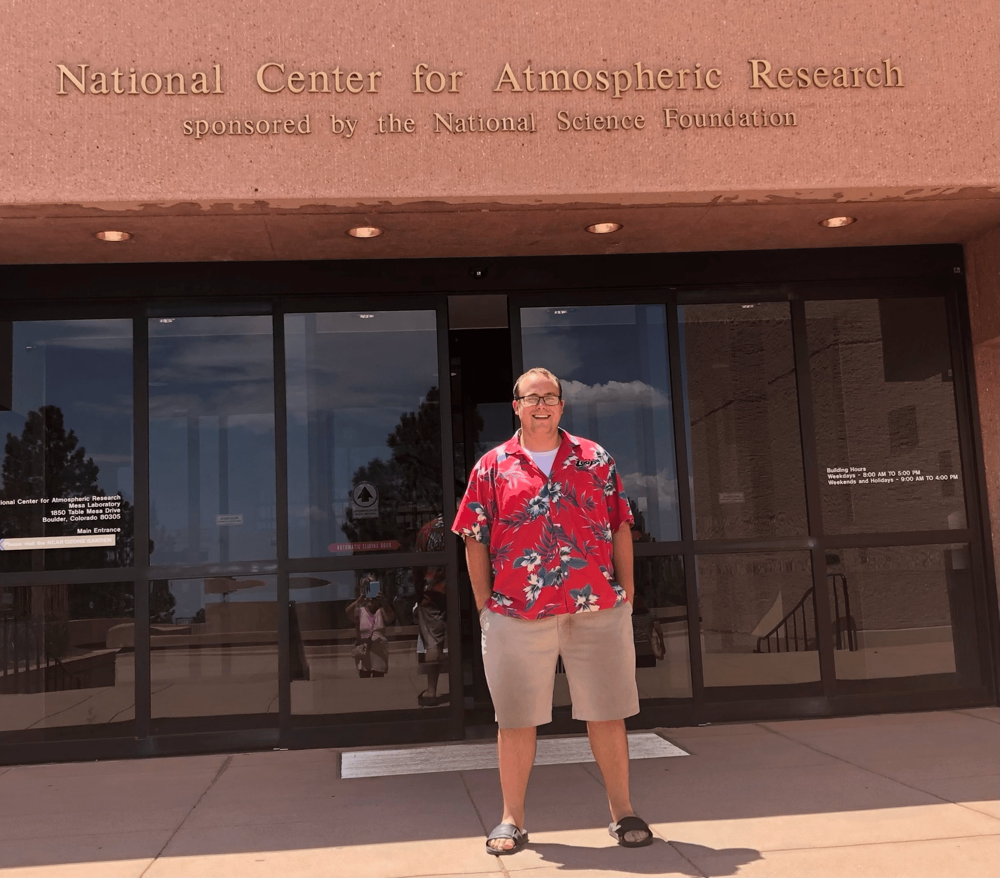

Westward Bound: Midwestern Grad Student to a Colorado Software Engineer#
September is fast approaching which marks six months since I started my role as a software engineer at the National Center for Atmospheric Research. It is crazy to think that just six months ago, I was pushing to finish the first draft of my Master’s Thesis. So much has changed since then.
Finishing Graduate School During a Pandemic#
I started at the University of Illinois in the Atmospheric Science graduate program in Fall of 2019, after completing the Unidata Summer Internship Program, moving from Boulder to Champaign. I remember leaving one of the parks in the Table Mesa neighborhood thinking that I wanted to come back to Boulder at some point…
Here is a picture from the day I left Boulder in August 2019

We only had ~ 7 months of “normalcy” before classes switched to a virtual format, leading to a much different graduate school experience. As a rather extraverted person, I thrive when I am around other people, gathering energy from making connections with other people, especially within the weather and climate community (I am that person at AMS that comes back from ~12 hours of conferencing, more energized than when I left in the morning).
I was able to spend more time with my family in Wisconsin during that experience, for which I am grateful for. I am privileged to have been able to spend am “extra” summer at the lake with my family, with our entire family remaining healthy. With their support, in addition to numerous virtual coffee breaks, happy hours, and random chats, I adapted to working from home, pushing ahead on my thesis research and finish the final few classes of my Masters coursework.
Transitioning from Observational Mesoscale Meteorology to Software Engineering in the Ocean Section#
When I found out that I would be working with the biogeochemistry group in the ocean section within the Climate and Global Dynamics Lab at NCAR, I was honestly terrified. I have never taken an oceanography class before, nor have I ever worked with ocean model output. The last time I learned about biology was my first year of high school. To say I was out of my comfort zone would be an understatement. I was both excited to learn about a new field, while also terrified that I would be responsible for developing for data I have never worked with.
Fortunately, meeting my fellow group members and coworkers, as well as connecting with those within the Pangeo community helped address these fears and feel connected to our mission. I have learned so much from those within CGD, as well as across the entire UCAR organization over the past 6 months, despite starting remote during a global pandemic in the midst of finishing my thesis.
Making the Move#
I decided to make the move to Colorado in early July, once I found out I would be able to come into the office at least a few days a week. The thought of driving up to the Mesa Laboratory to my office a few days a week and meeting up with coworkers at area breweries was enough to convince me to finally make the move.
The chance to adventure into the mountains was also another farily compelling reason.

Since being out here, I have been able to meet up with coworkers to go on hikes, visit breweries, and check out local coffee shops, all of which have been fanastic. In addition to connections with NCAR, I have met up with colleagues in Unidata, the National Weather Service, and weather/climate focused friends at various private companies in Colorado. I am still shocked how strong of a scientific community the Boulder area is - the shear density of earth scientists is amazing and something I am grateful to be a part of.
Reflecting on 6 Months In#
I still can’t believe it has already been 6 months since I started my role at NCAR. There two primary initiatives/projects I have really been excited to be involved with:
ESDS at NCAR#
When I first started, I was told I would have an opportunity to be actively involved with the Earth System Data Science initiative at NCAR, working to change the culture around collaborating on scientific workflows. My main roles include:
Coordinating biweekly work-in-progress talks
Building and maintaining a repository/website to host materials related to ESDS
Publish weekly blog posts detailing workflows related to CESM + general Pangeo stack
Focus on using new prototypes being developed
Learn + document “best practices”
Chat with people about this at office hours
Add documentation onto the ESDS site under FAQ
Project Pythia#
I have always been passionate about teaching others how to do more with their data using scientific Python stack, through the development of educational materials. I attended my first Project Pythia meeting, immediately excited about the collaboration between NCAR, Unidata, and UAlbany, all of which I had at least some connection to. As a software engineer intern in Summer 2019, I travelled to Albany, New York with Ryan May to help teach a Python workshop to the Atmospheric Science program there.
This spring and summer, we have continued to push forward to publishing the Foundations Book which covers the basics of Python for the geosciences, as well as the Resource Gallery which provides access to a plethora of externally hosted content. I have also had the opportunity to be involved with the NCAR Python Tutorial Series, as both a chat moderator (helper) and presenter.
Conclusions#
Thinking about how much has changed over the past 6 months can be tough to comprehend - I am working with completely different data, different teams, halfway across the country. One thing that hasn’t changed is my passion for working on open source software and helping + teaching others about the Python ecosystem. When I wake up everyday and log on, I am genuinely excited. I love what I do - having the opportunity to develop new tools, prototype solutions, and teach people how to use those tools and packages does not feel like work.
I am grateful for all the professional development and leadership opportunties that have been offered to me thus far in my career in NCAR/UCAR, including:
Presenting on the current state of CESM diagnostics at the CESM workshop
Attending the Dask Summit and SciPy Conferences
Participating in “Scalable Python using Dask” class
I look forward to continuing to present at conferences and workshops, sharing what we are learning through our collaborations both at NCAR/UCAR and the wider Pangeo community.
If you are interested in the weekly ESDS blog posts I mentioned before, here is a link!
Stay tuned for additional personal update posts!